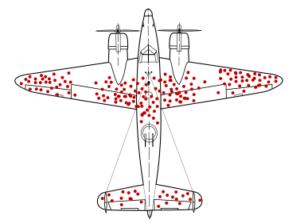

Aborder les problèmes courants en analyse de données
Argumenter le choix de procédures d’analyses
Mettre en oeuvre une démarche d’analyse de données avec
Interpréter & restituer les résultats d’une analyse
On attend:
Attention
Réflexion
Participation
Evaluation:
2 CC (50%) + 1 projet (50%)
Quelques définitions (Wiki)
LAstatistique: discipline qui étudie les phénomènes à travers la collecte de données, leur traitement, leur analyse, l’interprétation et la présentation des résultats […]. Domaine des mathématiques + boîte à outils. Fait partie de la science des données
LESstatistiques: type d’information obtenu en soumettant les valeurs à des opérations mathématiques.
L’analyse des données: Famille de méthodes statistiques dont les principales caractéristiques sont d’être multidimensionnelles et descriptives.
: en anglais, data analysis\(\Leftrightarrow\) Statistique
En résumé
La statistique s’intéresse à des jeux de données de taille raisonnable, fréquents dans vos domaines.
Les statistiques sont (utilisées) partout
En cela elles sont un outil politique, traduisant une certaine vision du monde et à manipuler avec précaution.
Coeur de la statistique
Avoir les bonnes données:
observations d’un phénomène
sont-elles représentatives ?
Ex. où renforcer l’avion ?

Les résumer, les visualiser
Se poser des questions:
Ex. pollution aux algues vertes: quelle variable utiliser ? Surface ? Masse ? Où/Quand/Comment faire des recueils ?
Cause / Conséquence (variété de blé / Rendement ; utilisation de phyto / diversité entomologique ; complexité du paysage)
Population: ensemble d’entités objet de l’investigation statistique
Individu: élément de la population d’étude
Echantillon: ensemble des individus pour lesquels des valeurs ont été observées pour les variables de l’étude
Variable: descripteur ou caractère des individus de la population d’étude
Inférence: décider pour une population à partir des données observées de l’échantillon
Quelques définitions (2/2)
Nature des variables:
Qualitatives : les valeurs prises sont des modalités
nominale : pas de structure d’ordre
ordinale : modalités ordonnées
quantitative: les valeurs prises sont numériques
discrete
continue $
Décrire les données à l’aide d’indicateurs
Soit \(x_1, x_2, ..., x_n\) une série de \(n\) valeurs d’une variable X. On peut les décrire en utilisant des indicateurs de position et de dispersion (que vous connaissez probablement)
médiane:\(\color{blue}{q_{0.5}(x) = }\) valeur telle que 50% des \(x_i\) ont une valeur inférieure et 50% une valeur supérieure
1er quartile:\(\color{blue}{q_{0.25}(x) = }\) valeur telle que 25% des \(x_i\) ont une valeur inférieure et 75% une valeur supérieure
3ème quartile:\(\color{blue}{q_{0.75}(x) = }\) valeur telle que 75% des \(x_i\) ont une valeur inférieure et 25% une valeur supérieure
quantile \(\alpha\):\(\color{blue}{q_\alpha(x) = }\) valeur telle que \(100 \times \alpha\) % des \(x_i\) ont une valeur inférieure et \(100 - 100 \times \alpha\)% une valeur supérieure
L’association Air Breizh surveille la qualité de l’air et mesure la concentration de polluants comme l’ozone (O3) ainsi que les conditions météorologiques comme la température, la nébulosité, le vent, etc. Durant l’été 2001, 112 données ont été relevées à Rennes.
Les graphiques sont ce qu’on retient de nombreux rapports / analyses / articles scientifiques.
Sur , le package ggplot2 permet de faire des visualisations allant du plus simple au plus compliqué.
GGplot - Quick tuto
GGplot - Exemple: distribution d’une variable quantitative
library(ggplot2)ggplot(ozone) # création de l'objet ggplot
GGplot - Exemple: distribution d’une variable quantitative
ggplot(ozone, aes(x = maxO3)) +# création de l'objet ggplot, en spécifiant ce qu'on veut en xgeom_histogram() # ajout d'une couche HISTOGRAMME
GGplot - Exemple: distribution d’une variable quantitative
ggplot(ozone, aes(x = maxO3)) +# création de l'objet ggplot, en spécifiant ce qu'on veut en xgeom_histogram() +# ajout d'une couche HISTOGRAMME +labs(title ="un joli titre", x="un joli titre pour l'axe x")
GGplot - Exemple: distribution d’une variable quantitative
ggplot(ozone, aes(x = maxO3)) +# création de l'objet ggplot, en spécifiant ce qu'on veut en xgeom_histogram(bins =20) +# ajout d'une couche HISTOGRAMME, classes plus grossièreslabs(title ="un joli titre", x="un joli titre pour l'axe x")
GGplot - Exemple: distribution d’une variable quantitative
ggplot(ozone, aes(y = maxO3)) +# création de l'objet ggplot, en spécifiant ce qu'on veut en ygeom_boxplot() +# ajout d'une couche boxplotlabs(title ="Boxplot du maximum d'ozone", x="un joli titre pour l'axe x", y ="Maximum d'ozone")
GGplot - Exemple: distribution d’une variable quantitative
Moche ? Pensez à theme_bw() (black & white)
ggplot(ozone, aes(y = maxO3)) +# création de l'objet ggplot, en spécifiant ce qu'on veut en ygeom_boxplot() +# ajout d'une couche boxplot, classes plus grossièreslabs(title ="Boxplot du maximum d'ozone", y ="Maximum d'ozone") +theme_bw()
Distribution d’une variable qualitative (1/2)
Le camembert c’est bon, mais seulement en fromage. SINON CA PUE TROP.
Quelle classe est la plus représentée ?
Distribution d’une variable qualitative (2/2)
Alternative: graphiques en barre
Code
ggplot(ozone, aes(x = vent)) +# création de l'objet ggplot, en spécifiant ce qu'on veut en xgeom_bar() +# ajout d'une couche barplottheme_bw() +labs(y ="Nb de jours", title ="Nombre de jours par direction de vent")
Code
library(dplyr)ozone %>%summarise(prop_vent =n()/nrow(ozone), .by = vent) %>%# On résume le jeu de donnée par direction de vent, on calcule le nb de chaque catégorie sur la longueur totale du jeu de donnéesmutate(vent =reorder(vent, prop_vent)) %>%# trier le facteur pour ordonner les catégories ggplot(aes(x = vent, y= prop_vent)) +labs(y ="%") +geom_col(alpha = .5)+# 50% de transparencescale_y_continuous(labels=scales::percent) +geom_text(aes(label=scales::percent(prop_vent)), vjust =-1.5)+theme_bw()
Effet d’une / deux variable(s) sur une variable quanti
#| ggplot(ozone, aes(x = T9, y= maxO3, color = vent)) +# ajout d'une couleur#par direction du ventgeom_point() +# ajout pointsgeom_smooth(method ="lm", se =FALSE) +# Ajout ajustement linéairetheme_bw()
Effet d’une / deux variable(s) quali sur une variable quanti (1/2)
ggplot(ozone, aes(x = vent,y= maxO3,fill=vent,col=vent)) +# dans aes: ce qui DEPEND du jeu de donnéesgeom_boxplot(outlier.shape=NA,alpha=0.4) +# alpha : transparencegeom_point(position =position_jitter(width =0.05, height=0)) +# ajout # points, avec perturbation horizontale pour faciliter visutheme_bw() +labs(title ="Effet du vent sur le max d'ozone")
Effet de deux variable(s) quali sur une variable quanti (2/2)
Quid d’une interaction potentielle vent pluie ?
Point code : La fonction %>% de dplyr permet de passer des arguments en chaîne dans des fonctions. Par ex.:
x <-1:3max(x)
[1] 3
library(dplyr) # permet d'utiliser %>% x %>% max # equivaut à max(x)
[1] 3
Code
library(dplyr)ozone %>%summarise(moy_O3 =mean(maxO3), .by =c(vent, pluie)) %>%# MOYENNER LES VALEURS DE MAXO3 PAR VENT ET PLUIE #ET PASSER LE RESULTAT DANS GGPLOT VIA %>% ggplot(aes(x = vent, y= moy_O3, group = pluie, color =pluie)) +geom_line() +geom_point() +theme_bw() +labs(title ="Interaction pluie:vent sur le max03",y ="Moyenne de maxO3", x ="Direction du vent")
Des visualisations vers les tests statistiques
Les visus précédentes nous ont permis d’intuiter certaines tendances.
Peut-on les généraliser ? Rappel:
C’est toute la question des tests statistiques.
Principes et applications des tests statistiques
De la question aux tests
On dispose de multiples variables, toutes présentant potentiellement un intérêt
Ici une variable particulière nous intéresse (c’est un choix ; guidé par la littérature scientifique / les politiques publiques etc. ): maxO3 (car étant clé pour la pollution de l’air). C’est la variable réponse
On peut se poser plusieurs questions:
Effet du vent sur le max d’ozone ?
Le temps sec/pluvieux influence-t-il le max d’ozone ? De la même manière selon les différentes directions du vent ?
Objectif : Généraliser (inférer) au-delà des données de l’échantillon
Problème : Comment gérer l’incertitude liée au fait qu’on a observé qu’une petite partie des données
Rappel sur la notion de distribution statistique
Définition :
Une distribution statistique décrit comment les valeurs d’une variable se répartissent dans un ensemble de données.
Types de variables :
Quantitatives : mesurables (ex : taille des plantes).
Qualitatives : catégories (ex : variétés de cultures).
Quelques paramètres descriptifs d’une distribution
Tendance centrale :
Moyenne : la “valeur attendue”.
Médiane : la valeur au milieu de la distribution.
Mode : la valeur la plus fréquente.
Dispersion :
Variance / écarte-type
IQR / étendue
Interprétation probabiliste
Probabilité et distributions :
La probabilité qu’une variable aléatoire appartienne à un intervalle donné est proportionnelle à la surface sous la courbe de distribution pour cet intervalle.
En termes mathématiques:
\(X\) variable aléatoire continue ayant pour densité \(f\).
On a \(\mathbb{P}(a \leq X \leq b) = \int_a^b f(t)dt\).
Loi normale et règle des 68-95-99
Loi normale : Distribution en forme de cloche centrée autour de la moyenne.
Règle 68-95-99 :
68% des données se trouvent à ±1 écart-type de la moyenne.
95% à ±2 écarts-types.
99.7% à ±3 écarts-types.
Illustration de la règle 68-95-99
Rappel: Théorème central limite
La moyenne \(\bar X\) de \(n\) valeurs issues d’une variable \(X\) de loi quelconque, de moyenne \(\mu\) et de variance \(\sigma^2\), suit la loi (si \(n > 30\) ou \(X \sim \mathcal{N}\))
\[\bar X \sim {\cal N} (\mu, \sigma^2/n) \quad \mbox{et donc} \quad \frac{\bar X - \mu}{\sqrt{\sigma^2/n}} \sim {\cal N} (0, 1)\]
En pratique, \(\sigma^2\) rarement connu, et donc doit être estimé à partir de l’échantillon
\(\Longrightarrow\) augmente un peu l’incertitude \(\Longrightarrow\) utilisation d’une loi de Student \((n-1)\) degrés de liberté (plutôt qu’une loi normale) : \(\frac{\bar X - \mu}{\sqrt{S^2/n}} \sim \mathcal{T}(n-1)\)
D’où l’intervalle de confiance de \(\mu\) au niveau de confiance 95%:
\(\left[~\bar x - \frac{s}{\sqrt{n}}t_{1-\alpha/2}(n-1)~;~ \bar x + \frac{s}{\sqrt{n}}t_{1-\alpha/2}(n-1)~\right]\)
t.test(ozone$maxO3)
One Sample t-test
data: ozone$maxO3
t = 33.905, df = 111, p-value < 2.2e-16
alternative hypothesis: true mean is not equal to 0
95 percent confidence interval:
85.02578 95.58136
sample estimates:
mean of x
90.30357
x <- ozone$maxO3mean(x) -qt(0.975,df =111)*sd(x)/sqrt(length(x))
[1] 85.02578
mean(x) +qt(0.975,df =111)*sd(x)/sqrt(length(x))
[1] 95.58136
Le TCL, c’est PUISSANT
Ce que dit le TCL, c’est que peu importe la distribution de base, les moyennes empiriques d’échantillons issues cette distribution auront une distribution normale centrée sur l’espérance de la distribution !
Une simulation rapide pour visualiser les choses
Ex distribution \(\chi_2(3)\)
On connaît la vraie moyenne de cette loi: 3
Mais dans la vraie vie, on aurait accès qu’à un échantillon de cette loi, par ex. de taille \(n = 50\). Regardons comment évolue la distribution des moyennes empiriques en fonction de la taille de l’échantillon.
Intervalle de confiance vers test de conformité
On suppose / connaît \(\frac{\bar X - \mu}{\sqrt{S^2/n}} \sim {\mathcal T}(n-1)\).
On peut maintenant tester si la moyenne est égale à une valeur particulière, par ex est-ce que \(\mu = 100\) ?
A partir d’un échantillon \(x\), on peut calculer \(\bar{x}\) et \(s^2\) et se demander si la valeur est typique d’une loi de Student à n-1 ddl.
Statistique de test: \(\frac{\bar X - \mu}{\sqrt{S^2/n}}\): il s’agit de la valeur qu’on peut calculer à partir de l’échantillon, et qu’on suppose suivre une certaine loi sous\(H_0\): ici une loi de Student à \(n-1\) ddl
p-value du test: probabilité calculée sous \(H_0\), que la statistique de test soit plus extrême que la valeur observée Tobs
p-value: “Dans un monde où \(H_0\) est vraie, la probabilité d’obtenir une valeur au moins aussi extrême pour la statistique de test est de p”
Si p < 0.05, on rejette l’hypothèse \(H_0\) au seuil de 5%
Dans notre cas, n = 112, donc \(T\) est censée suivre une loi de Student à 111 ddl, sous \(H_0\):
One Sample t-test
data: ozone$maxO3
t = -3.6406, df = 111, p-value = 0.0004148
alternative hypothesis: true mean is not equal to 100
95 percent confidence interval:
85.02578 95.58136
sample estimates:
mean of x
90.30357
[1] 0.0004147533
Pour une loi de Student à n-1 ddl, -3.64 est une valeur peu probable donc on rejette \(H_0\), au seuil de 5%.
Ici, on a testé \(H_0\) vs H1 : \(\mu \neq 100\) (alternative = “two.sided”) mais on aurait pu testeer H1: \(\mu < 100\) (alternative = “less”) ou H1: \(\mu > 100\) (alternative = “greater”)
Comparaison de 2 moyennes (1/2)
Question: le temps (sec/pluvieux) a-t-il un effet sur le max d’ozone ?
Réflexe: visu !
Code
ozone %>%ggplot(aes(x = pluie, y = maxO3, fill = pluie, col = pluie)) +geom_point(position =position_jitter(width = .05, height =0)) +geom_boxplot(alpha= .3, outlier.shape =NA) +theme_bw() +theme(legend.position ="none")
Passer de l’échantillon à n’importe quel jour induit de l’incertitude. Mais, il est plus facile de conclure qu’il y a une différence entre les deux moyennes dans la population si:
Les moyennes sont très différentes ( vs )
La variabilité du maximum d’ozone est faible au sein des jours pluvieux et au sein des jours secs
Il y a beaucoup de données
Comparaison de 2 moyennes (2/2)
On considère que les données de la sous-population 1 sont telles que \((X_{i1})_{1\leq i\leq n_1} \sim {\cal N}(\mu_1,\sigma^2)\) et que les données de la sous-population 2 sont telles que \((X_{i2})_{1\leq i\leq n_2} \sim {\cal N}(\mu_2,\sigma^2)\)\(\Rightarrow\) (pour l’instant) seules les moyennes peuvent être différentes
Statistique de test: \(T = \frac{\bar{X_1} - \bar{X_2}}{\sqrt{\frac{\hat{\sigma}^2}{n_1} + \frac{\hat{\sigma}^2}{n_2}}}\)
Sous \(H_0\), T suit une loi de Student \(n_1 + n_2 -2\)
Si les variances sont inégales, le test est différent \(\Longrightarrow\) tester l’égalité des variances avant de faire le test de comparaison de moyennes
Test de comparaison de 2 variances
\(H_0\) hypothèse nulle, \(H_0:\sigma_1^2=\sigma_2^2\) vs \(H_1\) hypothèse alternative, \(H1: \sigma_1^2\ne\sigma_2^2\)
\(\Longleftrightarrow~~H_0:\frac{\sigma_1^2}{\sigma_2^2}=1\) contre \(H_1:\frac{\sigma_1^2}{\sigma_2^2}\ne 1\)
Statistique de test: \(F=\frac{S_1^2}{S_2^2}\)
Sous \(H_0\), F suit une loi de Fisher à \(n_1 - 1\) et \(n_2 - 1\) ddl
Mise en pratique
var.test(maxO3 ~pluie, data = ozone, alternative ="two.sided")
F test to compare two variances
data: maxO3 by pluie
F = 0.35906, num df = 42, denom df = 68, p-value = 0.0005659
alternative hypothesis: true ratio of variances is not equal to 1
95 percent confidence interval:
0.2108847 0.6338374
sample estimates:
ratio of variances
0.3590605
Ici on rejet \(H_0\) au seuil de 5%, les variances sont différentes
# NOTEZ LE VAR.EQUALt.test(maxO3 ~pluie, data = ozone, alternative ="two.sided", var.equal =FALSE)
Welch Two Sample t-test
data: maxO3 by pluie
t = -6.3362, df = 109.88, p-value = 5.321e-09
alternative hypothesis: true difference in means between group Pluie and group Sec is not equal to 0
95 percent confidence interval:
-36.02936 -18.86110
sample estimates:
mean in group Pluie mean in group Sec
73.39535 100.84058
t.test(maxO3 ~pluie, data = ozone, alternative ="two.sided", var.equal =TRUE)
Two Sample t-test
data: maxO3 by pluie
t = -5.6715, df = 110, p-value = 1.157e-07
alternative hypothesis: true difference in means between group Pluie and group Sec is not equal to 0
95 percent confidence interval:
-37.03521 -17.85525
sample estimates:
mean in group Pluie mean in group Sec
73.39535 100.84058
On rejette \(H_0\), on affirme que les moyennes sont significativement différentes
Erreur et puissance d’un test
Décision d’un test prise pour la population (“il y a plus d’ozone les jours sec”) alors qu’on n’observe qu’un échantillon
\(\Rightarrow\) Décision incertaine, et deux erreur possibles
Erreur de première espèce: rejeter \(H_0\) alors que celle-ci est vraie: faux positif
Erreur de deuxième espèce : ne pas rejeter \(H_0\) alors que celle-ci est fausse: faux négatif
En image ( qu’est-ce que H0 ici ?):
un test est dit puissant si son erreur de 2ème espèce est petite. La puissance d’un test est la probabilité de rejeter \(H_0\) et d’avoir raison
Puissance d’un test (1/2)
Question souvent posée Combien de données faut-il pour tester une différence entre 2 moyennes ?
Par ex.: combien de patients pour tester s’il y a une diff entre 2 médicaments pour faire baisser le taux de cholestérol ?
Rappel: de quoi est-ce que ça dépend ?
Reformuler la question
Combien faut-il de patients pour mettre en évidence une différence d’au moins 0.2g/l entre les 2 médicaments ?
Toujours pas possible
MAAAAAIS
Puissance d’un test (2/2)
MAAAAAIS si;
on connaît la variance de la variable d’intérêt (ex. expériences antérieures montrent un écart-type de 0.4g/l) (sd)
on veut détecter une différence donnée par ex toute diff > 0.2g/l (delta)
on veut détecter cette différence avec proba de 80% (power)
alors c’est possible
power.t.test(delta=0.2, sd =0.4, power = .80)
Two-sample t test power calculation
n = 63.76576
delta = 0.2
sd = 0.4
sig.level = 0.05
power = 0.8
alternative = two.sided
NOTE: n is number in *each* group
Analyse de variance à un facteur
Test de l’effet d’un facteur
Par ex. la direction du vent a-t-elle un effet sur le maximum d’ozone ?
Variable réponse quantitative, notée Y: maxO3
Variable explicative qualitative à I modalités (groupes): direction du vent
ozone %>%ggplot(aes(x = vent, y = maxO3, fill = vent, col = vent)) +geom_point(position =position_jitter(width = .05, height =0)) +geom_boxplot(alpha= .3, outlier.shape =NA) +theme_bw() +labs(title ="Effet du vent sur le max d'ozone")
Question de base modifiée en : la moyenne du maximum d’ozone est-elle la même pour chaque direction du vent ?
Problématique qui revient souvent
L’effet de cultures intermédiaires est-il le même selon l’espèce/variété ?
La présence de haies a-t-elle une influence sur la population d’auxiliaires de cultures ?
Y a-t-il un effet de la variété sur le rendement du blé dans telle expérimentation ?
etc. etc. etc.
De manière générale, l’ANOVA est le cadre d’analyse de l’effet d’une variable qualitative à I modalités (par ex. sol nu / moutarde / phacélie) sur une variable quantitative
Mais alors pourquoi parler d’Analyse de Variance si on veut comparer des moyennes ?
La réponse viendra avec les explications (et les mains dans le cambouis)
Mettons les mains dans le cambouis
Données & notations
vent
maxO3
Notation
Est
92
\(y_{11}\)
Est
121
\(y_{12}\)
Nord
87
\(y_{21}\)
Nord
82
\(y_{22}\)
Ouest
94
\(y_{31}\)
Ouest
80
\(y_{32}\)
Sud
90
\(y_{41}\)
…
…
…
\(y_{ij}\) valeur de \(Y\) pour l’individu \(j\) du groupe \(i\)
Moyenne du groupe \(i\): \(y_{i\bullet}=\frac{1}{n_i}\sum_{j=1}^{n_i} y_{ij}\)
\[\mbox{SCER minimal quand }\forall~i,~\hat\mu +\hat\alpha_i=\frac{1}{n_i}\sum_{j=1}^{n_i}Y_{ij}=Y_{i\bullet}\]
Contraintes classiques:
Un niveau particulier comme référence: \(\alpha_1 = 0 \ \Rightarrow \hat\mu=Y_{1\bullet}\) et \(\forall i, \hat{\alpha}_i=Y_{i\bullet}-Y_{1\bullet}\)
la moyenne des moyennes par groupe comme référence: \(\sum_{i=1}^I\alpha_i=0 \ \Rightarrow \hat\mu=\frac{1}{I}\sum_{i=1}^I Y_{i\bullet}, ~~ \forall \,i,\,\hat\alpha_i=Y_{i\bullet}-\hat\mu\)
Exemple pour clarifier
groupe 1
groupe 2
groupe3
\(y_{11}=6\)
\(y_{21}=2\)
\(y_{31}=3\)
\(y_{12}=9\)
\(y_{22}=4\)
\(y_{32}=1\)
\(y_{13}=6\)
\(y_{22}=3\)
\(y_{1\bullet}=7\)
\(y_{2\bullet}=3\)
\(y_{3\bullet}=2\)
\(y_{\bullet\bullet}=4.25\)
Avec traitement 1 comme référence : \(\hat\mu= 7\); \(\hat\alpha_1=0\); \(\hat\alpha_2=-4\) et \(\hat\alpha_3=-5\)
Deux rapports de corrélation différents pour des \(Y_{i\bullet}\) identiques.
Inférence: test global
Rappel de l’objectif: y a-t-il un effet du facteur sur Y ?
\(\rightarrow\) La variabilité de Y est-elle expliquée par le facteur groupe ? Ou bien peut-on considérer que les données proviennt d’une même loi \(\mathcal{N}(\mu, \sigma^2)\) ?
library(FactoMineR)LinearModel(maxO3 ~vent, data = ozone)
Call:
LinearModel(formula = maxO3 ~ vent, data = ozone)
Residual standard error: 27.32 on 108 degrees of freedom
Multiple R-squared: 0.08602
F-statistic: 3.388 on 3 and 108 DF, p-value: 0.02074
AIC = 744.8 BIC = 755.7
Ftest
SS df MS F value Pr(>F)
vent 7586 3 2528.69 3.3881 0.02074
Residuals 80606 108 746.35
Ttest
Estimate Std. Error t value Pr(>|t|)
(Intercept) 94.7382 3.0535 31.0265 < 2e-16
vent - Est 10.8618 6.8294 1.5904 0.11466
vent - Nord -8.6092 4.6219 -1.8627 0.06522
vent - Ouest -10.0382 4.0972 -2.4500 0.01589
vent - Sud 7.7856 5.2052 1.4957 0.13764
Inférence: test de conformité d’un coefficient (1/2)
Si on rejette l’hypothèse \(H_0: \forall i, \alpha_i=0\), on veut savoir quels \(\alpha_i\) sont différents de 0
La valeur de \(\hat\alpha_i\) dépend de l’échantillon de données et donc l’estimateur \(\hat\alpha_i\) est une variable aléatoire \[{\cal L}(\hat\alpha_i)={\cal N}\left(\alpha_i,\sigma_{\hat\alpha_i}^2\right)~~\Longleftrightarrow~~{\cal L}\left(\frac{\hat\alpha_i-\alpha_i}{\sigma_{\hat\alpha_i}}\right)={\cal N}(0,1)\]
Statistique de test\(\displaystyle\frac{\hat\alpha_1}{\hat\sigma_{\hat\alpha_1}}\)
Loi de la statistique de test sous\(H_0\)\({\cal L}\left(T_{obs}=\frac{\hat\alpha_1}{\hat\sigma_{\hat\alpha_1}}\right)={\cal T}_{\nu=n-I}\)
Décision par la p-value
Rq : connaissant la loi de \(\hat\alpha_1\), on peut construire un intervalle de confiance: \[\alpha_1 \in \left[\hat\alpha_1-\hat\sigma_{\hat\alpha_1}\times t_{0.975}(n-I)~;~\hat\alpha_1+\hat\sigma_{\hat\alpha_1}\times t_{0.975}(n-I) \right]\]
Inférence: test de conformité d’un coefficient (2/2)
Estimate Std. Error t value Pr(>|t|)
(Intercept) 94.738210 3.053461 31.026504 1.290980e-55
vent - Est 10.861790 6.829425 1.590440 1.146587e-01
vent - Nord -8.609178 4.621850 -1.862713 6.522029e-02
vent - Ouest -10.038210 4.097207 -2.450013 1.589160e-02
vent - Sud 7.785599 5.205173 1.495743 1.376372e-01
library(FactoMineR)res <-LinearModel(maxO3 ~vent, data = ozone)res$Ttest
Estimate Std. Error t value Pr(>|t|)(Intercept) 94.738210 3.053461 31.026504 1.290980e-55vent - Est 10.861790 6.829425 1.590440 1.146587e-01vent - Nord -8.609178 4.621850 -1.862713 6.522029e-02vent - Ouest -10.038210 4.097207 -2.450013 1.589160e-02vent - Sud 7.785599 5.205173 1.495743 1.376372e-01
Test de comparaison 2 à 2
Autre stratégie : comparer toutes les paires de moyennes
Pb : on effectue beaucoup de tests \(\Rightarrow\) risque de multiplier les erreurs en rejetant des hypothèses \(H_0\).
\(\Rightarrow\) correction des tests: modifier le seuil \(\alpha =5\%\) et prendre \(\alpha=\frac{5\%}{(\mbox{nb tests)}}\)
$adjMean
vent emmean SE df lower.CL upper.CL
Est 105.6 8.64 108 83.7 127.5
Nord 86.1 4.91 108 73.7 98.6
Ouest 84.7 3.86 108 74.9 94.5
Sud 102.5 5.96 108 87.4 117.7
Confidence level used: 0.95
Conf-level adjustment: bonferroni method for 4 estimates
$groupComp
$groupComp$Letters
Ouest Nord Sud Est
"a" "a" "a" "a"
$groupComp$LetterMatrix
a
Ouest TRUE
Nord TRUE
Sud TRUE
Est TRUE
attr(,"class")
[1] "meansComp"
Les résidus, c’est ce qui n’est pas expliqué par le modèle. Donc pour les estimer, il faut ajuster le modèle
On peut ensuite vérifier les hypothèses du modèle
residus <-data.frame(residus=res$lmResult$residuals, vent = ozone$vent)residus %>%ggplot(aes(x=residus))+geom_histogram(fill="lightblue", aes(y =after_stat(density)))+theme_bw() +labs(x ="Résidu", y ="Densité", title ="histogramme des résidus")
residus %>%ggplot(aes(y=residus,x=vent,fill=vent))+geom_boxplot(alpha = .5)+labs(title ="Boxplot des résidus par vent") +theme_bw()
Régression linéaire simple
Liaison linéaire
ozone %>%ggplot(aes(x = T9, y= maxO3)) +geom_point() +geom_smooth(method ="lm", se =FALSE) +# se= FALSE pour virer les# intervalles de confiance, method = "lm" ajustement linéairelabs(title ="Lien entre température à 9°C et maximum d'ozone") +theme_bw()
Questions
Influence de la température sur le max d’ozone ?
A quel max d’ozone peut-on s’attendre s’il fait 19.5°C à 9h ?
Objectifs
Etudier qualitativement et quantitativement la dépendance d’une variable réponse quantitative Y en fonction d’une variable quantitative x
La variable x permet elle d’expliquer la variabilité de la variable Y?
Prédire Y à partir de x
Un autre indice de liaison: le coefficient de corrélation linéaire
Statistique de test :\(\displaystyle\frac{\hat\beta_1}{\hat\sigma_{\hat\beta_1}}\)Loi de la statistique de test sous\(H_0\): \({\mathcal L}\left(T_{obs}=\frac{\hat\beta_1}{\hat\sigma_{\hat\beta_1}}\right)={\mathcal T}_{\nu=n-2}\)
Rq 1. : comme dans l’ANOVA, connaissant la loi de \(\hat\beta_1\), on peut construire un intervalle de confiance: \[\beta_1 \in \left[\hat\beta_1-\hat\sigma_{\hat\beta_1}\times t_{0.975}(n-2) \ ; \ \hat\beta_1+\hat\sigma_{\hat\beta_1}\times t_{0.975}(n-2) \right]\]
Rq 2. : on peut aussi tester \(\beta_0\) mais cela a moins d’importance en pratique
ozone %>%ggplot(aes(x = T9, y = maxO3)) +geom_point() +geom_smooth(method ="lm") +# affiche intervalle de confiance par défauttheme_bw()+labs(title ="Intervalle de confiance du comportement moyen")+theme(text =element_text(size =15))
Différent de:
Prédiction d’une nouvelle valeur de Y pour un \(x_0\) donné (notez le 1 supplémentaire dans la variance).
Une variable quanti peut avoir un effet différent selon différentes modalités d’une quali
ozone %>%ggplot(aes(x = T9, y = maxO3, color = vent))+geom_point() +geom_smooth(method ="lm", se =FALSE) +labs(title ="Effet de T9 sur l'ozone selon les directions du vent") +theme_bw() +theme(text =element_text(size =15))
La variance des résidus \(\sigma^2\) est estimée par: \[\hat \sigma^2=\frac{\sum_{i}(Y_{i}-\hat Y_{i})^2}{\mbox{nb données} - \mbox{nb paramétres estimés é partir des données}}~~~~~~~~~~\mathbb{E}(\hat\sigma^2)=\sigma^2\]
Pourcentage de variabilité de\(Y\) expliquée par le modèle: \(R^2 = \frac{SC_{modele}}{SC_{totale}}\)
Propriétés: \(R^2 \in [0,1]\).
La variabilité du modèle peut être décomposée par variable de 2 façons:
en calculant la variabilité expliquée par chaque variable les unes aprés les autres (pb : la variabilité d’une variable dépend de l’ordre d’introduction des variables)
en calculant la variabilité expliquée exclusivement par une variable (pb : la somme des variabilités de toutes les variables n’est pas égale à la variabilité du modèle)
Dans certains cas (données équilibrées), la variabilité du modéle se décompose parfaitement et ces 2 calculs donnent les mêmes résultats.
Exemple sur ozone
library(FactoMineR)LinearModel(maxO3~T9+T12+T15+Ne9+Ne12+Ne15+Vx9+Vx12+Vx15+maxO3v+vent+pluie, data =ozone)
L’ensemble de variables \({\mathcal V}\) apporte-t-il des informations complémentaires intéressantes sachant que les autres variables sont déjé dans le modèle ?
Hypothèses : \(H_0\):“tous les coefficients associés aux variables de \({\mathcal V}\) sont égaux à 0” contre \(H_1\) : “au moins un coefficient des variables \({\mathcal V} \neq\) 0
Statistique de test:\(\displaystyle{F_{obs}=\frac{SC_{\mathcal V}/ddl_{\mathcal V}}{SC_R/ddl_R}=\frac{CM_{\mathcal V}}{CM_R} }\)
Loi de la statistique de test: Sous \(H_0\), \({\mathcal L}(F_{obs}) = {\mathcal F}_{ddl_R}^{ddl_{\mathcal V}}\)
Revient à choisir entre le sous-modèle sans les variables \({\mathcal V}\) ou le modèle complet
Si \({\mathcal V}\) contient tous les effets : revient à tester si \(R^2\) est significativement différent de 0, i.e. si toutes les variables sont inutiles (versus au moins une utile)
On somme les degrés de liberté associés é l’ensemble \({\mathcal V}\) sachant qu’1 variable quanti à 1 ddl, 1 variable quali à \(I-1\) ddl et une interaction a comme ddl le produit des ddl de chaque facteur
Sélection de variables
Sélection de modèle = trouver un compromis entre un modèle qui s’ajuste bien aux données et qui n’a pas “trop” de paramètres (Rappel: )
Souvent utilisé: sélection du modèle qui minimise l’AIC / BIC: compromis entre maximisation de la vraisemblance \(L\) (à quel point le modèle s’ajuste bien aux données) et le nb de paramètres
\(AIC = 2p - 2ln(\hat{L})\)
\(BIC = pln(n) - 2ln(\hat{L})\)
A votre avis, quelle est la différence entre les 2 critères ( !)
Plusieurs stratégies
Construction exhaustive de tous les sous-modèles (long et même impossible si trop de variables)
Méthode descendante (backward): construire le modéle complet; supprimer la variable explicative la moins intéressante et reconstruire le modèle sans cette variable; itérer jusqu’à ce que toutes les variables explicatives soient intéressantes
Méthode ascendante (forward): partir du modéle avec la variable la plus intéressante; ajouter la variable qui, connaissant les autres variables du modèle, apporte le plus d’information complémentaire; itérer jusqu’é ce qu’aucune variable n’apporte d’information intéressante
Méthode stepwise: compromis entre les 2 méthodes ci-dessus
Exemple sur ozone: sélection de variables
library(FactoMineR)LinearModel(maxO3 ~ ., data = ozone, selection ="bic")
Results for the complete model:
==============================
Call:
LinearModel(formula = maxO3 ~ ., data = ozone, selection = "bic")
Residual standard error: 14.51 on 97 degrees of freedom
Multiple R-squared: 0.7686
F-statistic: 23.01 on 14 and 97 DF, p-value: 8.744e-25
AIC = 613 BIC = 653.8
Results for the model selected by BIC criterion:
===============================================
Call:
LinearModel(formula = maxO3 ~ T12 + Ne9 + Vx9 + maxO3v, data = ozone,
selection = "bic")
Residual standard error: 14 on 107 degrees of freedom
Multiple R-squared: 0.7622
F-statistic: 85.75 on 4 and 107 DF, p-value: 1.763e-32
AIC = 596 BIC = 609.6
Ftest
SS df MS F value Pr(>F)
T12 6650.4 1 6650.4 33.9334 6.073e-08
Ne9 2714.8 1 2714.8 13.8522 0.0003172
Vx9 903.4 1 903.4 4.6094 0.0340547
maxO3v 7363.5 1 7363.5 37.5721 1.499e-08
Residuals 20970.2 107 196.0
Ttest
Estimate Std. Error t value Pr(>|t|)
(Intercept) 12.631310 11.000877 1.1482 0.2534427
T12 2.764090 0.474502 5.8252 6.073e-08
Ne9 -2.515402 0.675845 -3.7219 0.0003172
Vx9 1.292857 0.602180 2.1470 0.0340547
maxO3v 0.354832 0.057888 6.1296 1.499e-08
Démarche en modélisation
Lister les variables potentiellement explicatives / prédictives
Visualiser
Selectionner le sous-modèle (minimisation de l’AIC ou du BIC)
Interpréter les résultats (quelles variables ressortent ? Est-ce surprenant ? Est-ce en accord avec les connaissances sur le sujet ? Des confusions possibles ?)
Interpréter les coefficients (signe, valeur etc.)
(Prédire pour de nouvelles valeurs)
Codage et contraintes pour variables quali
La matrice de design \(X\) (dans \(Y = X\beta + E\)) a autant de lignes que d’individus. Pour les colonnes, c’est variable…
Constante (\(\mu\) ou \(\beta_0\))
Variable quanti
Variable Quali
Interaction quali -quali
Représentation dans X
Une colonne de 1
Valeur de la variable
(I-1) colonnes par modalités de chaque variable à I modalités
(I-1)*(J-1) colonnes
Degrés de libertés (ddl)
1
1
I-1
(I-1)*(J-1)
Commentaires
Contrainte à poser sur les paramètres (le mieux est \(\sum_{i=1}^n \alpha_i = 0\))
Contrainte à poser sur les paramètres (le mieux est \(\forall i, \sum_j \alpha \beta_{ij} =0\) et \(\forall j, \sum_i \alpha \beta_{ij} =0\))
Important
Le choix de la contrainte impacte FORTEMENT l’interprétation
\(\sum_i \alpha_i= 0\), la comparaison est faite par rapport à la moyenne des moyennes par modalité
\(\alpha_1= 0\), la comparaison est faite par rapport à un niveau de ref (moins intuitif, et pas pratique quand présence d’interactions)
Certaines fonctions de R par défaut utilisent la contrainte 2. !
Comparez les sorties de ces différentes lignes de code…
#lm par défautcoef( lm(maxO3 ~ pluie,data= ozone) )
(Intercept) pluieSec
73.39535 27.44523
#lm en spécifiant le contrastecoef(lm(maxO3 ~ pluie,data = ozone,contrasts =list(pluie="contr.sum")))
(Intercept) pluie1
87.11796 -13.72262
# LinearModel prémâche le travailleLinearModel(maxO3 ~ pluie,data= ozone)$Ttest
Les résidus sont la part du phénomène non-expliquée par le modèle
On peut vérifier les hypothèses initiales du modèle
Levene's Test for Homogeneity of Variance (center = median)
Df F value Pr(>F)
group 3 1.5589 0.2036
108
Test de Shapiro-Wilk de normalité des Résidus (Rq : la non-normalité n’est pas un pb tant que la distribution est symétrique)
Shapiro-Wilk normality test
data: res
W = 0.97117, p-value = 0.01587
Retour sur l’exemple ozone
Maximum d’ozone : variable réponse
Les variables de températures, nébulosité, vitesse de vent (quanti), et la direction et la pluie (quali) sont prises en compte
On ne sait pas si les interactions entre variables quali et entre les variables quali et quanti sont négligeables \(\Longrightarrow\) on les met dans le modèle
Residual standard error: 14.54 on 56 degrees of freedomMultiple R-squared: 0.8658F-statistic: 6.569 on 55 and 56 DF, p-value: 2.585e-11AIC = 634 BIC = 786.2
Residual standard error: 13.8 on 97 degrees of freedomMultiple R-squared: 0.7906F-statistic: 26.16 on 14 and 97 DF, p-value: 8.082e-27AIC = 601.8 BIC = 642.6
On peut dire (à partir des effets significatifs) qu’il y a, sur le max d’O3:
des effets de nébulosité de vitesse de vent, du maximum d’O3 de la veille
des effets de la direction du vent et des températures mais à travers les interactions : la direction du vent modifie l’effet de la T\(^o\) (i.e. amplifie l’effet de la T\(^o\) ou la diminue selon la direction du vent) sur max O3
On peut aussi dire (à partir des absences d’effets significatifs):
la pluviométrie n’est pas un facteur déterminant qui influe sur le max d’03
une seule nébulosité (Ne12) est conservée dans le modèle : cela ne veut pas dire que les autres nébulosités n’ont pas d’effet (elles peuvent avoir un effet similaire). Idem pour la vitesse de vent.
pour la T\(^o\), on a besoin des T\(^o\) à 9h et à 15h pour mieux prévoir le maximum d’ozone. L’effet de la T\(^o\) n’est pas exactement le même entre 9h et 15h (mais 12h n’est pas utile comme info)
l’effet de la nébulosité est le même quelle que soit la direction du vent. Idem pour la vitesse du vent.
maximum d’O3 de la veille est grand, maximum d’O3 du jour
les jours de vents d’est et surtout du nord ont des max d’O3 supérieur aux jours de vents d’ouest et du sud
les jours de vent du nord, l’effet de la T\(^o\) à 9h est plus important (coef \(= 6.14\)); au contraire quand le vent vient de l’est. C’est l’inverse pour la T\(^o\) à 15h
Ainsi, quand le vent du nord, l’effet de la T\(^o\) à 9h est particulièrement fort (donc s’il fait chaud à 9h quand le vent vient du nord, le max d’O3 risque d’être important)
etc.
Démarche en modélisation (bis)
Lister les variables potentiellement explicatives / prédictives
Visualiser
Selectionner le sous-modèle (minimisation de l’AIC ou du BIC)
Interpréter les résultats (quelles variables ressortent ? Est-ce surprenant ? Est-ce en accord avec les connaissances sur le sujet ? Des confusions possibles ?
Interpréter les coefficients (signe, valeur etc.)
Prédire pour de nouvelles valeurs
Travaux dirigés
Liste de messages d’erreurs communs
Erreur dans file(file, “rt”) : impossible d’ouvrir la connexion:
Nom du fichier mal spécifié
Chemin mal spécifié (vérifiez le projet dans lequel vous êtes en haut à droite)